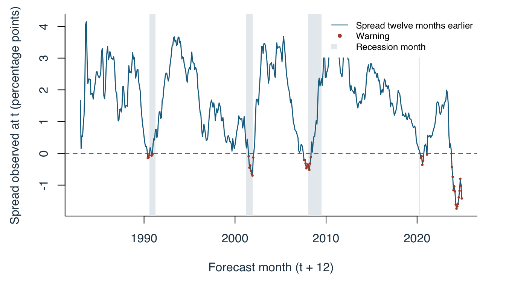
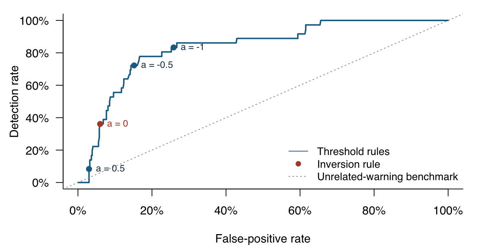
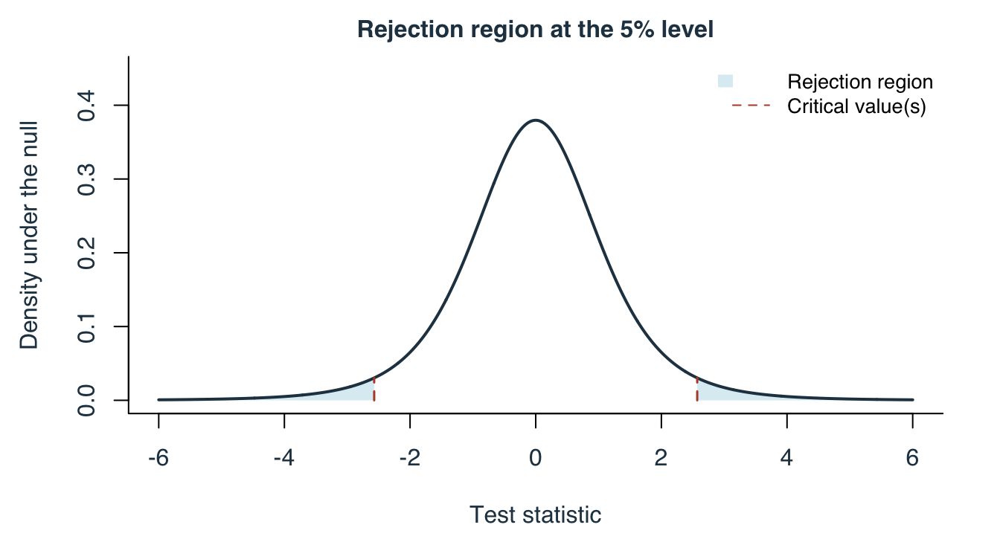
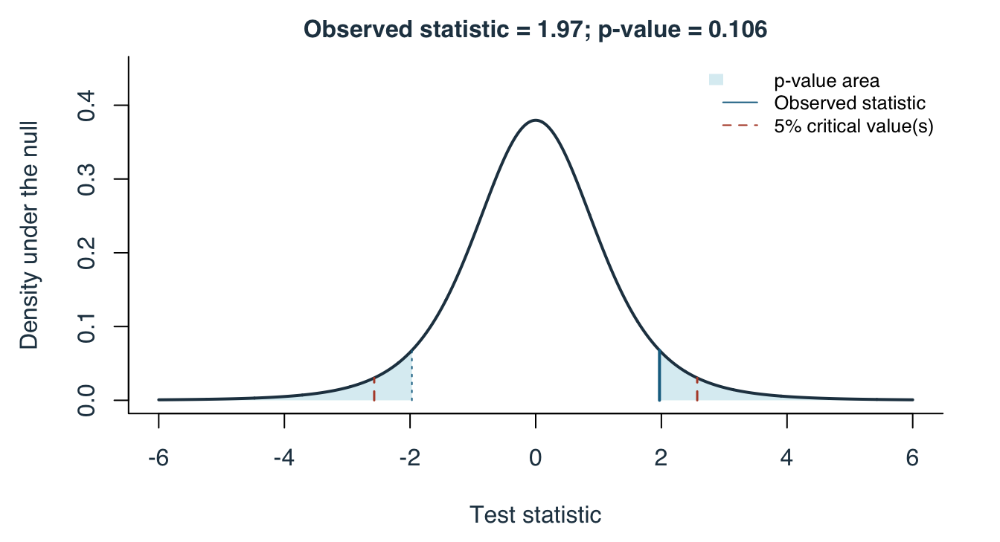
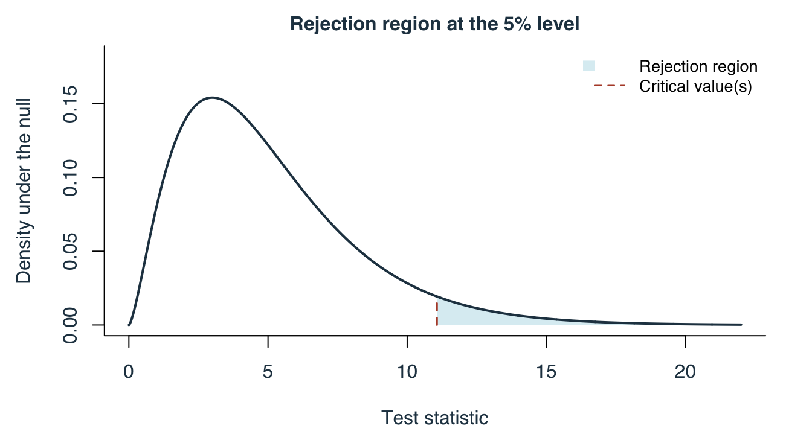
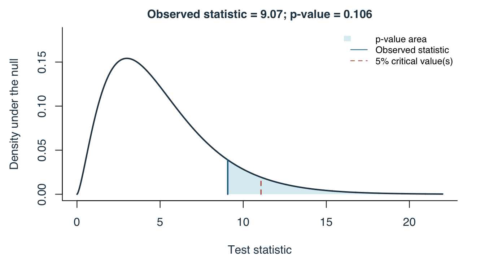
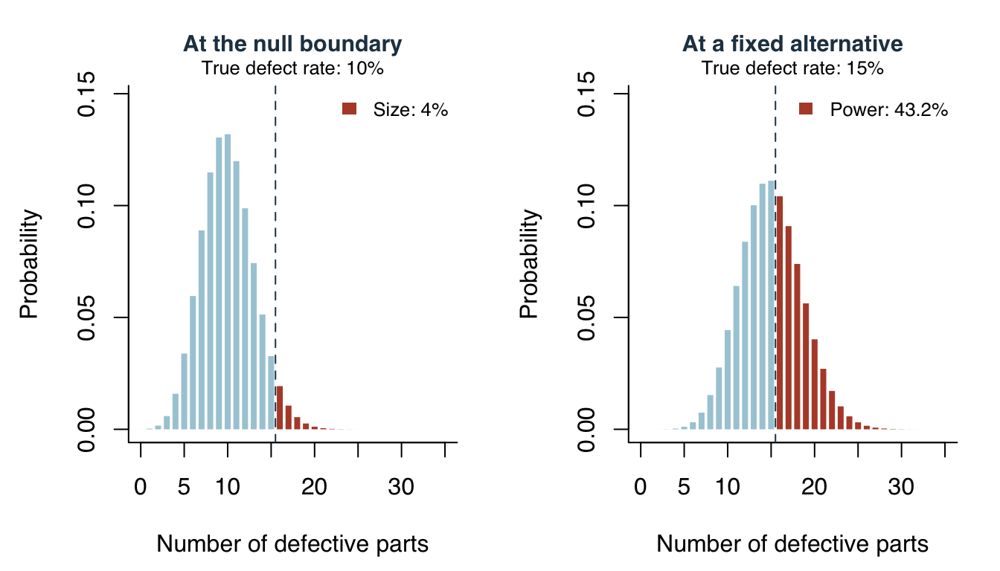
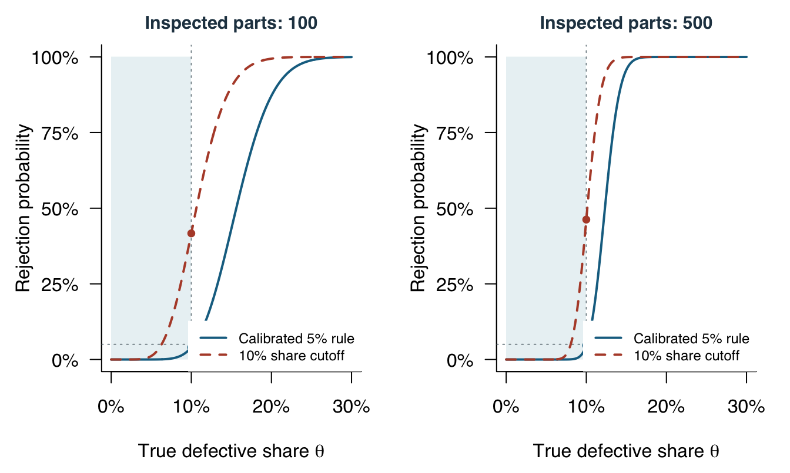
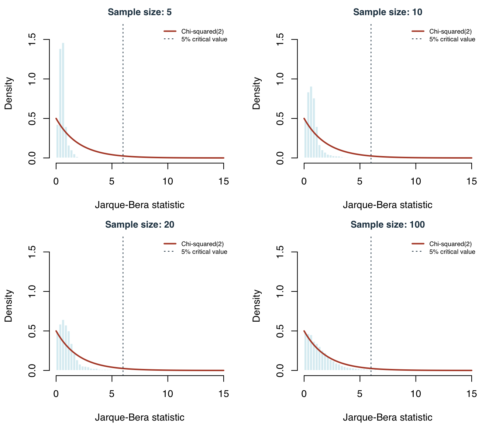
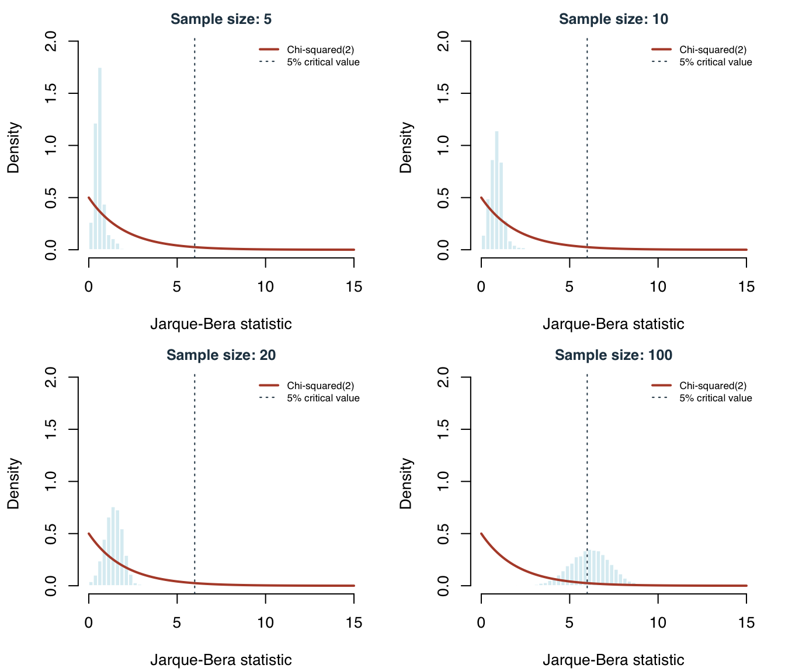

Chapter 3 Statistical tests
Prerequisites. Probability distributions, sampling distributions, quantiles, and the central limit theorem.
After working through this chapter, you should be able to:
- Formulate null and alternative hypotheses and define a rejection region.
- Distinguish size, significance level, power, and the two types of testing error.
- Compute and interpret a p-value for a specified test.
- Explain the terminology used for one-tail and two-tail rejection regions.
- Assess the asymptotic level and consistency of a test.
Roadmap. We begin with the logic and possible errors of statistical decisions. We then study rejection regions and p-values, introduce asymptotic properties, and finish with normality tests. Section 3.6 provides applications to size, power, and distributional testing.
A statistical test asks whether a hypothesis about an unknown parameter is compatible with the observed data. The data are random, and their distribution depends on that parameter, so the answer must account for sampling uncertainty.
For example, suppose that \(\mathbf{x}=\{x_1,\dots,x_n\}\) is an i.i.d. sample with unknown mean \(\mu\) and variance \(\sigma^2\). We may wish to assess whether \(\mu=0\) or whether \(\sigma=1\). A test translates either question into a decision rule whose possible errors can be quantified.
The hypothesis the researcher wants to test is called the null hypothesis. It is often denoted by \(H_0\). It is a conjecture about a given property of a population. Without loss of generality, it can be stated as: \[ H_0:\;\{\theta \in \Theta_0\}, \] where \(\Theta_0\) is the set of parameter values allowed by the null hypothesis. It can also be defined through a function \(h\) (say):2 \[ H_0:\;h(\theta)=0. \]
The alternative hypothesis, often denoted \(H_1\), is then defined by \(H_1:\;\{\theta \in \Theta_1\}\), where \(\Theta_1\) contains the parameter values under consideration that are not in \(\Theta_0\).3
The ingredients of a statistical test are:
- a vector of (unknown) parameters (\(\theta\)),
- a test statistic, that is a function of the sample components (\(S(\mathbf{x})\), say), and
- a critical region (\(\Omega\), say), defined as a set of implausible values of \(S\) under \(H_0\).
To implement the test, we need the distribution of \(S\) under \(H_0\). We compute \(S(\mathbf{x})\) and determine whether it lies in the critical region \(\Omega\), which contains values judged sufficiently implausible under the null. If \(S(\mathbf{x})\in\Omega\), we reject \(H_0\). The reasoning is: if the null were true, an outcome at least this unfavorable to it would be rare.
There are two possible outcomes:
- \(H_0\) is rejected if \(S \in \Omega\);
- \(H_0\) is not rejected if \(S \not\in \Omega\).
Except in extreme cases, there is always a non-zero probability to reject \(H_0\) while it is true (Type I error, or false positive), or to fail to reject it while it is false (Type II error, or false negative).
This vocabulary is widely used. For instance, the notions of false positive and false negative are used in the context of Early Warning Signals (see Example 3.1).
Example 3.1 (Early Warning Signals) Early-warning systems aim to detect crises before they occur. See, for example, ECB (2014) for applications to financial crises.
Suppose an index \(W\) tends to be large before a financial crisis. An early-warning rule predicts a crisis when \(W>a\). Lowering \(a\) produces more warnings and therefore more false positives; raising \(a\) produces fewer warnings and therefore more false negatives. The threshold determines the trade-off between the two errors. Example 3.2 implements this idea using US recession dates and Treasury yields.
3.1 Size and power of a test
Definition 3.1 (Size and Power of a test) For a test with rejection region \(\Omega\), define its rejection probability at parameter value \(\theta\) by \(\pi(\theta)=\mathbb{P}_\theta(S\in\Omega)\). Then:
- the size of the test is \(\alpha=\sup_{\theta\in\Theta_0}\pi(\theta)\); a test has significance level \(\alpha\) if its size is at most \(\alpha\),
- the power function is \(\pi(\theta)\) for \(\theta\in\Theta_1\); at a particular alternative \(\theta\), the probability of a type-II error is \(\beta(\theta)=1-\pi(\theta)\).
For a simple null and a simple alternative, each hypothesis specifies a single distribution. In that special case, these definitions reduce to \[\begin{eqnarray} \alpha &=& \mathbb{P}(S \in \Omega\mid H_0) \quad \mbox{(probability of a false positive)},\\ \beta &=& \mathbb{P}(S \not\in \Omega\mid H_1) \quad \mbox{(probability of a false negative)}. \end{eqnarray}\]
The power is the probability that the test will lead to the rejection of the null hypothesis if the latter is false. Therefore, for a given size, we prefer tests with high power.
In most cases, size and power involve a trade-off. In the early-warning example, increasing \(a\) reduces false positives and therefore the size of the rule, but it also increases false negatives and therefore reduces power. The next section shows how a critical region formalizes this choice.
Example 3.2 (A yield-curve warning of US recessions) Can the slope of the yield curve warn of a recession? We use USrecession, described in Appendix 10.6. It contains monthly Treasury yields and the NBER recession chronology for 1982–2024. A yield is an annualised interest rate. The term spread is the 10-year yield minus the 3-month yield, measured in percentage points. For example, yields of 4% and 4.5% give a spread of \(-0.5\) percentage points: the yield curve is inverted.
At the end of month \(t\), we issue a warning if the spread is negative. Define the score \(W_t\) and the warning rule by \[ W_t=-(\text{10-year yield}_t-\text{3-month yield}_t), \qquad\text{warning at }t\quad\Longleftrightarrow\quad W_t>a. \] Our starting threshold is \(a=0\). The outcome is whether the economy is in recession in month \(t+12\). This is a fixed twelve-month horizon, not the occurrence of any recession during the next twelve months. The warning uses yields from month \(t\); the later NBER dating is used only to assess its outcome.
Code
data("USrecession",package="AEC")
ews_us <- subset(USrecession,!is.na(recession_12m))
ews_score <- -ews_us$term_spread
ews_outcome <- ews_us$recession_12m==1L
ews_warning <- ews_score>0
ews_tp <- sum(ews_warning & ews_outcome)
ews_fp <- sum(ews_warning & !ews_outcome)
ews_fn <- sum(!ews_warning & ews_outcome)
ews_tn <- sum(!ews_warning & !ews_outcome)There are 504 evaluable warning months, January 1982–December 2023, whose outcomes run from January 1983 to December 2024. The final twelve months of the dataset have no outcome within the snapshot and are excluded from evaluation. Figure 3.1 aligns the spread with the month it is intended to predict.

Figure 3.1: The yield spread observed twelve months earlier, aligned with the forecast month. Grey bands show NBER recession months. Orange points mark negative spreads, which trigger warnings. Every plotted spread was observed twelve months before the month on the horizontal axis.
Count the four possible outcomes. The warning rule gives the following table. Each cell counts forecast months, rather than distinct recession episodes.
Code
| Decision at t | No recession at t + 12 | Recession at t + 12 |
|---|---|---|
| No warning | 440 | 23 |
| Warning | 28 | 13 |
The rule detects 13 of the 36 recession months, so its detection rate is \(13/36=\) 36.1%. It misses the remaining 23 recession months: the false-negative rate is 63.9%. Among the 468 non-recession months, 28 receive warnings, giving a false-positive rate of \(28/468=\) 6%.
Notice the denominators. The fraction of warnings that are false is instead \(28/41=\) 68.3%. It answers a different question: given that a warning has been issued, how often is the forecast month outside a recession?
Change the threshold. Lowering \(a\) issues more warnings. The following table holds the sample and forecast horizon fixed while changing only that threshold.
Code
ews_rates <- function(a) {
warning <- ews_score>a
c(Warnings=sum(warning),Detection=100*mean(warning[ews_outcome]),
False_positive=100*mean(warning[!ews_outcome]))
}
ews_thresholds <- c(-1,-.5,0,.5)
ews_threshold_table <- data.frame(Threshold=ews_thresholds,
t(vapply(ews_thresholds,ews_rates,numeric(3))))
data_table(ews_threshold_table,digits=1,
col.names=c("a (percentage points)","Warnings","Detection (%)","False positives (%)"))| a (percentage points) | Warnings | Detection (%) | False positives (%) |
|---|---|---|---|
| -1.0 | 151 | 83.3 | 25.9 |
| -0.5 | 97 | 72.2 | 15.2 |
| 0.0 | 41 | 36.1 | 6.0 |
| 0.5 | 17 | 8.3 | 3.0 |
Moving from \(a=0\) to \(a=-1\) raises detection from 36.1% to 83.3%, but raises the false-positive rate from 6% to 25.9%. Figure 3.2 displays this trade-off over all thresholds. It is called a receiver operating characteristic (ROC) curve: its horizontal coordinate is the false-positive rate and its vertical coordinate is the detection rate.

Figure 3.2: Historical detection versus false-positive rates as the warning threshold varies. The highlighted point is the inversion rule a = 0; the other labelled points match the threshold table. The diagonal is the benchmark for warnings unrelated to the outcome. All points use the same 504 forecast months.
These rates are conditional frequencies computed from the historical data. Adjacent months are dependent, and the 36 recession months belong to four recession episodes. We will return to estimating binary-outcome models and evaluating time-series forecasts in Chapters 7 and 8.
3.2 Critical regions and p-values
The shape of the critical region depends on which values of \(S\) contradict the null. Its boundary is calibrated so that \(\mathbb{P}_\theta(S\in\Omega)\le\alpha\) for every \(\theta\in\Theta_0\), with equality at a least-favourable null value when the test has size exactly \(\alpha\). A smaller significance level therefore reserves rejection for more unusual outcomes under \(H_0\).
In this book, the terms one-sided and two-sided describe the shape of the rejection region for the chosen test statistic. A two-sided (or two-tailed) test rejects in both tails. This is common when large positive and large negative values of a symmetric statistic both count against \(H_0\), as in Figures 3.3 and 3.4. This web interface illustrates alternative situations.
In much of the statistical literature, however, one-sided and two-sided primarily describe the direction of the alternative hypothesis (for example, \(\mu>\mu_0\) versus \(\mu\ne\mu_0\)). The two usages often agree, but they are not identical. In particular, an upper-tail chi-square or \(F\) test has a one-tail rejection region even though the underlying departure from the null need not have a single direction.
Figure 3.4 also illustrates the notion of p-value for a two-sided test. The p-value is the smallest significance level at which the observed statistic would be rejected by the specified family of rejection regions. Thus, if the p-value is at most \(\alpha\), we reject \(H_0\) at significance level \(\alpha\); otherwise, we do not reject it.

Figure 3.3: A two-tail rejection region for a Student t statistic with 5 degrees of freedom. The critical values are -2.571 and 2.571; the shaded tails have total probability 0.05.

Figure 3.4: The p-value includes both tails beyond the observed absolute statistic, 1.97. Its value is about 0.106, greater than 0.05: the observation does not lie in the 5% rejection region.
Figures 3.5 and 3.6 illustrate a one-tailed, or one-sided, rejection region in the terminology used in this course. Here only large values of a chi-square statistic count against \(H_0\), so the critical region is in the upper tail. A statistic with support on \(\mathbb{R}^+\) does not by itself force a one-tail test; the rejection region follows from which values provide evidence against the null. Figure 3.6 also illustrates the corresponding p-value.

Figure 3.5: An upper-tail rejection region for a chi-squared statistic with 5 degrees of freedom. The critical value is 11.070; the shaded tail has probability 0.05.

Figure 3.6: The upper-tail p-value is the probability of a statistic at least as large as 9.07 under the null. It exceeds 0.05, so the null is not rejected at the 5% level.
Example 3.3 (Inspecting a factory's production) A factory produces cylinders with a target diameter of 1 cm. A cylinder is defective if its diameter falls outside \([0.99,1.01]\) cm. The client’s specification allows at most 10% defective parts. Let \(\theta\) be the unknown proportion of defective parts. We test \[ H_0:\theta\leq0.10\qquad\text{against}\qquad H_1:\theta>0.10. \] Rejecting \(H_0\) flags production as failing the specification. Not rejecting means that the inspection has not established a violation.
Measuring every part would be costly, so we inspect \(n\) randomly chosen parts. We model their defect indicators as independent Bernoulli variables with parameter \(\theta\); for sampling without replacement from a lot of one million parts, this is an approximation justified by the small sampling fraction. Define \[ d_i=\begin{cases}1&\text{if part }i\text{ is defective},\\0&\text{otherwise},\end{cases} \qquad X_n=\sum_{i=1}^n d_i\sim\mathcal{B}(n,\theta). \] The statistic \(S_n=X_n/n\) is the observed defective share. Large values count against \(H_0\), so we reject when \(X_n>k_n\), or equivalently when \(S_n>b_n=k_n/n\).
Choose the rule before inspecting the parts. Setting \(b_n=0.10\) may seem natural, but the specification and the rejection threshold serve different purposes. When production is exactly at the allowed limit, sampling variation frequently puts the observed share above 10%. For \(n=100\), the rule would reject as soon as 11 defects are found; its false-positive probability at \(\theta=0.10\) is about 42%, far above 5%.
To control false positives at 5%, choose the smallest integer \(k_n\) satisfying \[ \mathbb{P}_{0.10}(X_n>k_n)\leq0.05. \] For a fixed cutoff, the rejection probability increases with \(\theta\). Its largest value under \(H_0\) therefore occurs at the boundary \(\theta=0.10\). Calibrating at this boundary controls the whole null hypothesis. Because the count is discrete, the size is generally below, rather than exactly equal to, 5%.
Code
factory_alpha <- .05
factory_theta0 <- .10
factory_alternative <- .15
factory_n <- c(100L,500L)
factory_k <- qbinom(1-factory_alpha,factory_n,factory_theta0)
factory_size <- pbinom(factory_k,factory_n,factory_theta0,lower.tail=FALSE)
factory_power <- pbinom(factory_k,factory_n,factory_alternative,lower.tail=FALSE)
data_table(data.frame(n=factory_n, Reject_from=factory_k+1,
Size=100*factory_size, Power=100*factory_power),digits=2,
col.names=c("Inspected parts","Reject from (defects)",
"Size (%)","Power at 15% defects (%)"))| Inspected parts | Reject from (defects) | Size (%) | Power at 15% defects (%) |
|---|---|---|---|
| 100 | 16 | 3.99 | 43.17 |
| 500 | 62 | 4.65 | 95.74 |
For 100 inspected parts, the 5% rule rejects when 16 or more are defective. Its size is 3.99%. The 5% significance level describes the probability of rejecting compliant production under repeated inspections; it is not the probability that production is compliant after observing a particular sample.
Read the two errors under two different distributions. Figure 3.7 holds this rule fixed and changes the true defect rate. At \(\theta=0.10\), the shaded rejection probability is the size. At \(\theta=0.15\), the same shaded region gives the power; the remaining probability is the type-II error probability.

Figure 3.7: One decision rule, two sampling distributions. With 100 inspected parts, reject from 16 defects. The highlighted bars show a false positive at the null boundary (left) and detection of a violation at a 15% defect rate (right).
At a true defect rate of 15%, an inspection of 100 parts detects the violation with probability 43.2%. It misses it with probability \(\beta(0.15)=\) 56.8%. With 500 inspected parts and a newly calibrated 5% rule, detection rises to 95.7%.
Read the entire rejection-probability curve. For any true defect rate, \[ \pi_n(\theta)=\mathbb{P}_\theta(X_n>k_n) =\sum_{j=k_n+1}^{n}{n\choose j}\theta^j(1-\theta)^{n-j}. \] On the null interval \([0,0.10]\), this is the false-positive probability at each parameter value; its maximum is the size. To the right of 0.10, it is the power function. Figure 3.8 compares the calibrated rule with the uncalibrated 10% cutoff. The latter detects more violations, but does so at the cost of a much larger size.

Figure 3.8: Rejection probabilities in the factory example. The shaded interval contains the null values. Blue curves use an exact binomial rule of level 5%; orange curves reject whenever the observed defective share exceeds 10%. The dots at the boundary mark each rule’s size. Increasing the sample size raises power while the calibrated rule continues to control size.
An inspection outcome also has an exact one-tail p-value. If \(x_{\mathrm{obs}}\) defects are observed, it is \[ p=\sup_{\theta\leq0.10}\mathbb{P}_\theta(X_n\geq x_{\mathrm{obs}}) =\mathbb{P}_{0.10}(X_n\geq x_{\mathrm{obs}}). \] For example, 16 defects out of 100 give \(p=\) 0.0399, so the 5% rule rejects. With 15 defects, \(p=\) 0.0726, so it does not reject.
Further parameter choices can be explored with this web interface.
3.3 Asymptotic properties of statistical tests
The preceding examples use a known finite-sample distribution. More often, the null distribution of a statistic is available only as a large-sample approximation, frequently through the CLT in Chapter 2. The rejection probability may then differ from its target in a finite sample even though it approaches that target as \(n\) grows. This motivates the definition of asymptotic size.
Definition 3.2 (Asymptotic level) An asymptotic test with critical region \(\Omega_n\) has asymptotic size equal to \(\alpha\) if: \[ \limsup_{n\rightarrow\infty}\;\sup_{\theta\in\Theta_0}\mathbb{P}_\theta(S_n\in\Omega_n)=\alpha. \]
Example 3.4 (The factory example) Return to Example 3.3. The exact binomial rule controls size for each sample size. We can also construct a simpler rule using the CLT. At the null boundary \(\theta_0=0.10\), \[ \frac{\sqrt{n}(S_n-0.10)}{\sqrt{0.10(1-0.10)}} =\frac{\sqrt{n}(S_n-0.10)}{0.30}\overset{d}{\longrightarrow}\mathcal{N}(0,1). \] Choose the threshold \[ b_n=0.10+\frac{0.30}{\sqrt{n}}\Phi^{-1}(1-\alpha), \qquad\text{and reject when }S_n>b_n. \] The exact rejection probability is increasing in \(\theta\), so its supremum under \(H_0\) is attained at 0.10. The CLT gives \[ \sup_{\theta\leq0.10}\mathbb{P}_\theta(S_n>b_n) =\mathbb{P}_{0.10}(S_n>b_n)\longrightarrow\alpha. \] The normal approximation therefore controls size asymptotically, while the exact binomial rule controls it in finite samples. These are related calibrations, not identical cutoffs.
Controlling asymptotic size addresses behavior under the null. Under a fixed alternative, we instead want the rejection probability to approach one. A test with this property is consistent.
Definition 3.3 (Asymptotically consistent test) An asymptotic test with critical region \(\Omega_n\) is consistent if: \[ \forall \theta \in \Theta_1, \quad \mathbb{P}_\theta (S_n \in \Omega_n) \rightarrow 1. \]
Example 3.5 (The factory example) Keep the asymptotically calibrated threshold from Example 3.4. It satisfies \(b_n\to0.10\). Under any fixed alternative \(\theta>0.10\), the LLN gives \(S_n\overset{p}{\to}\theta\). The threshold and the statistic therefore converge to different limits, with the statistic above the threshold: \[ \mathbb{P}_\theta(S_n>b_n)\longrightarrow1. \] Thus the same rule both controls asymptotic size and detects every fixed alternative with probability approaching one. The exact binomial rule has the same consistency property because its threshold \(k_n/n\) also converges to 0.10.
A fixed cutoff \(b=0.10\) is also consistent against \(\theta>0.10\), but its rejection probability at the null boundary converges to \(1/2\). Consistency alone does not ensure a useful significance level.
3.4 Example: Normality tests
The general ideas above can now be assembled in a concrete test. Gaussian assumptions support many exact finite-sample results, so it is often useful to assess whether a sample is compatible with normality. The Jarque-Bera test compares sample skewness and kurtosis with their Gaussian values. We first define these population and sample moments, then derive the test statistic and study its large-sample behavior.
Let \(f\) be the p.d.f. of \(Y\). The \(k^{th}\) standardized moment of \(Y\) is defined as: \[ \psi_k = \frac{\mu_k}{\left(\sqrt{\mathbb{V}ar(Y)}\right)^k}, \] where \(\mathbb{E}(Y)=\mu\) and \[ \mu_k = \mathbb{E}[(Y-\mu)^k]= \int_{-\infty}^{\infty} (y-\mu)^k f(y) dy \] is the \(k^{th}\) central moment of \(Y\). In particular, \(\mu_2 = \mathbb{V}ar(Y)\). Using these notations, \(\psi_k\) rewrites: \[ \psi_k = \frac{\mu_k}{\left(\mu_2^{1/2}\right)^k}, \]
The skewness of \(Y\) corresponds to \(\psi_3\) and the kurtosis to \(\psi_4\) (Def. 9.6).
Proposition 3.1 (Skewness and kurtosis of the normal distribution) For a Gaussian var., the skewness (\(\psi_3\)) is 0 and the kurtosis (\(\psi_4\)) is 3.
Proof. For a centered Gaussian distribution, \((-y)^3f(-y)=-y^3f(y)\). This implies that \[\begin{eqnarray*} \int_{-\infty}^{\infty}y^3f(y)dy&=&\int_{-\infty}^{0}y^3f(y)dy+\int_{0}^{\infty}y^3f(y)dy\\ &=&-\int_{0}^{\infty}y^3f(y)dy+\int_{0}^{\infty}y^3f(y)dy=0, \end{eqnarray*}\] which leads to the skewness result.
For the kurtosis, first standardize the variable. If \(Z\sim\mathcal{N}(0,1)\) has density \(f\), then \(f'(z)=-zf(z)\) and therefore \(\frac{d}{dz}(z^3f(z))=3z^2f(z)-z^4f(z)\). Integration over \(\mathbb{R}\) gives \(\mathbb{E}(Z^4)=3\mathbb{E}(Z^2)=3\), which is also the kurtosis of every non-degenerate Gaussian variable.
Let us now introduce the sample analog of standardized moments. The \(k^{th}\) central sample moment of \(Y\) is given by: \[ m_k = \frac{1}{n}\sum_{i=1}^n(y_i - \bar{y})^k, \] and the \(k^{th}\) standardized sample moment of \(Y\) is given by: \[ g_k = \frac{m_k}{m_2^{k/2}}. \]
Proposition 3.2 (Consistency of central sample moments) If the \(y_i\)’s are i.i.d. and \(\mathbb{E}(|Y|^k)<\infty\), then the sample central moment \(m_k\) is a consistent estimator of the central moment \(\mu_k\).
Proposition 3.3 (Asymptotic distribution of sample skewness under normality) If \(y_i\sim\,i.i.d.\,\mathcal{N}(\mu,\sigma^2)\), then \(\sqrt{n}g_3 \overset{d}{\rightarrow} \mathcal{N}(0,6)\).
Proof. See, e.g. Lehmann (1999).
Proposition 3.4 (Asymptotic distribution of sample kurtosis under normality) If \(y_i\sim\,i.i.d.\,\mathcal{N}(\mu,\sigma^2)\), then \(\sqrt{n}(g_4-3) \overset{d}{\rightarrow} \mathcal{N}(0,24)\).
Proposition 3.5 (Joint asymptotic distribution of skewness and kurtosis under normality) If \(y_i\sim\,i.i.d.\,\mathcal{N}(\mu,\sigma^2)\), then the vector \((\sqrt{n}g_3,\sqrt{n}(g_4-3))\) is asymptotically bivariate Gaussian. Further its elements are uncorrelated (and therefore independent, because Gaussian).
The Jarque-Bera statistic is defined by: \[ JB = n \left( \frac{g_3^2}{6}+\frac{(g_4-3)^2}{24} \right) = \frac{n}{6}\left(g_3^2 + \frac{(g_4-3)^2}{4}\right). \]
Proposition 3.6 (Jarque-Bera asympt. distri.) If \(y_i\sim\,i.i.d.\,\mathcal{N}(\mu,\sigma^2)\), \(JB \overset{d}{\rightarrow} \chi^2(2)\).
Proof. This directly derives from Proposition 3.5.
Example 3.6 (Jarque-Bera power against a uniform alternative) This simulation checks the null approximation and rejection behaviour against a uniform alternative, whose kurtosis differs from three (see Definition 3.3).
For each simulated sample, we compute the Jarque-Bera statistic defined above.
Code
JB <- function(x){
N <- dim(x)[1] # number of samples
n <- dim(x)[2] # sample size
x.bar <- apply(x,1,mean)
x.x.bar <- x - matrix(x.bar,N,n)
m.2 <- apply(x.x.bar,1,function(x){mean(x^2)})
m.3 <- apply(x.x.bar,1,function(x){mean(x^3)})
m.4 <- apply(x.x.bar,1,function(x){mean(x^4)})
g.3 <- m.3/m.2^(3/2)
g.4 <- m.4/m.2^(4/2)
return(n*(g.3^2/6 + (g.4-3)^2/24))
}Let us first consider the case where \(H_0\) is satisfied. Figure 3.9 displays, for different sample sizes \(n\), the distribution of the JB statistics when the \(y_i\)’s are normal, consistently with \(H_0\). It appears that when \(n\) grows, the distribution indeed converges to the \(\chi^2(2)\) distribution (as stated by Proposition 3.6). The \(\chi^2(2)\) distribution is represented in orange on each plot.

Figure 3.9: Sampling distributions of the Jarque-Bera statistic under normality, with 10,000 simulations per sample size. All panels share the same axes. The orange curve is the asymptotic chi-squared density with 2 degrees of freedom; the dotted line marks its 5% critical value.
We next draw the \(y_i\)’s from a uniform distribution, so \(H_0\) is not satisfied. Figure 3.10 shows that, as \(n\) grows, the distribution of the JB statistic shifts to the right. This illustrates consistency against the uniform alternative (see Def. 3.3).

Figure 3.10: Sampling distributions of the Jarque-Bera statistic under a uniform alternative, with 10,000 simulations per sample size and the same horizontal scale as the preceding figure. As n increases, more statistics exceed the 5% critical value.
3.5 Chapter recap
- Definition 3.1 distinguishes the rejection probability under the null (size) from the rejection probability under an alternative (power).
- Section 3.2 explains how the direction of evidence determines the rejection region and how a p-value summarizes the evidence against the null.
- Example 3.3 shows the size-power trade-off in a finite-sample decision rule.
- Definition 3.2 extends size control to tests whose null distribution is known only asymptotically.
- Definition 3.3 requires the rejection probability to converge to one under every fixed alternative.
- Proposition 3.6 combines sample skewness and kurtosis into the asymptotic Jarque-Bera normality test.
3.6 Exercises
Attempt each question and explain your reasoning, including for true-or-false statements. Foundation exercises apply a result directly; Standard exercises require several steps or a short proof; Advanced exercises combine several results or require a longer derivation. Worked solutions and exercise-specific hints are reserved for teaching sessions and are not included in this student edition.
Exercise 3.1 (Kurtosis of a Gaussian scale mixture) Advanced | Analytical
Review Section 3.
Assume that \(Z|Y \sim \mathcal{N}(0, Y^2)\) and that \(Y \sim \mathcal{N}(0, \sigma^2)\).
Compute \(\mathbb{V}ar(Z)\).
Recalling that the kurtosis of a normal variable is equal to 3, compute \(\mathbb{E}(Y^4)\).
Compute \(\mathbb{E}(Z^4 | Y)\) and deduce \(\mathbb{E}(Z^4)\).
Compute the kurtosis of \(Z\).
Is \(Z\) a Gaussian variable?
Exercise 3.2 (Testing with a normal statistic: true or false?) Foundation | True or false
Review Section 3.
For each statement, decide whether it is true or false and justify your answer.
Consider a null hypothesis \(H_0\). Under that null hypothesis, the test statistic \(z\) is \(\mathcal{N}(0, 1)\). We use a two-tail rejection region (a two-sided test in the terminology of this course) and set its size \(\alpha\) at 5%.
Using our data we get \(z = -3.2\). We reject the null hypothesis.
Under \(H_0\), the probability of making type-I errors is 5%.
The probability of making Type-II error is smaller than 5%.
The size (or level) of the test is the probability to make Type-II errors.
If I am very averse to Type-I error, I choose a low value for the size of the level.
Exercise 3.3 (Testing with a chi-squared statistic: true or false?) Foundation | True or false
Review Section 3.
Consider a test with statistic \(z\). Under the null hypothesis (\(H_0\)), \(z\) follows a \(\chi^2(7)\) distribution (chi-squared with 7 degrees of freedom; see table below). The rejection region is in the upper tail (a one-sided test in the terminology of this course).
For each statement, decide whether it is true or false and justify your answer.
If \(z \ge 10\), we always reject the null hypothesis at the 5% significance level (test size \(\alpha=5\%\)).
If \(H_0\) is valid, and when the test size (\(\alpha\)) is 10%, the probability of making a Type I error is 10%.
The power of the test is necessarily greater than the size of the test.
Under \(H_0\), the probability of having \(-1.96<z<1.96\) is approximately 95%.
If the p-value of the test is 1.5%, we reject \(H_0\) at the 5% significance level (test size \(\alpha=5\%\)).
Use the chi-squared quantiles reported in the statistical tables of the Appendix.
Exercise 3.4 (Size, power, and sample size) Standard | Calculation
Review Section 3.1.
Let \(X_1,\dots,X_n\) be i.i.d. \(\mathcal{N}(\mu,4)\). Consider \(H_0:\mu=0\) against \(H_1:\mu>0\). The test rejects when \(\bar X_n>c_n\).
- For \(n=25\), choose \(c_n\) so that the test has size \(5\%\).
- Compute the power of this test when \(\mu=0.5\).
- Keeping a 5% significance level, find the smallest integer \(n\) that gives power of at least \(90\%\) when \(\mu=0.5\).
- Explain why reducing the significance level while holding \(n\) fixed reduces power at every fixed alternative \(\mu>0\).